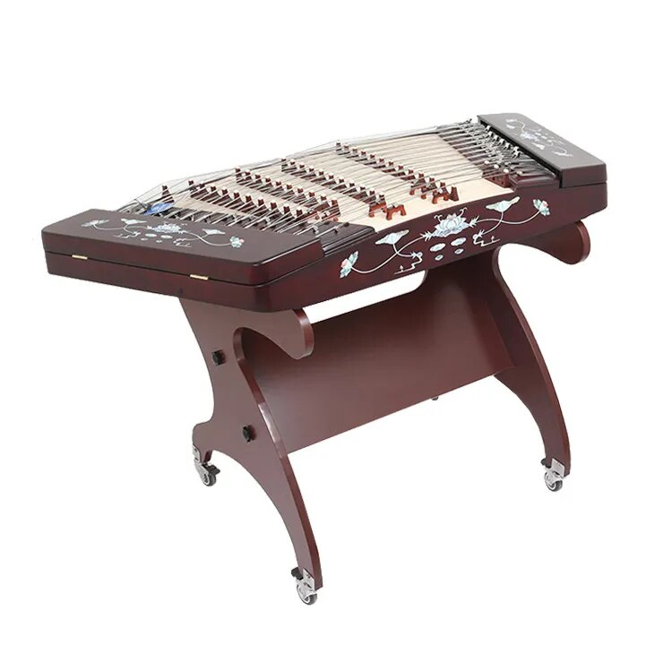

Янцин
Янцин, также известный как гучжэн, представляет собой традиционный китайский струнный инструмент, который прославился своим изысканным звучанием и уникальным дизайном. Этот инструмент, принадлежащий семейству цзя, имеет древнюю историю и является важной частью китайской музыкальной культуры.
Янцин имеет длинный резонирующий корпус, обычно сделанный из дерева, и плоскую деку с двумя отверстиями для звука. Сверху растянуты четыре струны, настроенные вдоль корпуса. Управление высотой звучания осуществляется с помощью мостика, который поднимает и опускает струны.
Игра на янцине требует от музыканта высокого мастерства и музыкального слуха. Звучание инструмента может быть как нежным и мелодичным, так и динамичным, в зависимости от исполняемой композиции. Янцин широко используется в китайской традиционной музыке, а также в современных жанрах и экспериментальных произведениях.
Этот инструмент играет ключевую роль в сохранении и передаче богатого музыкального наследия Китая, а его звучание продолжает вдохновлять музыкантов и ценителей музыки по всему миру.